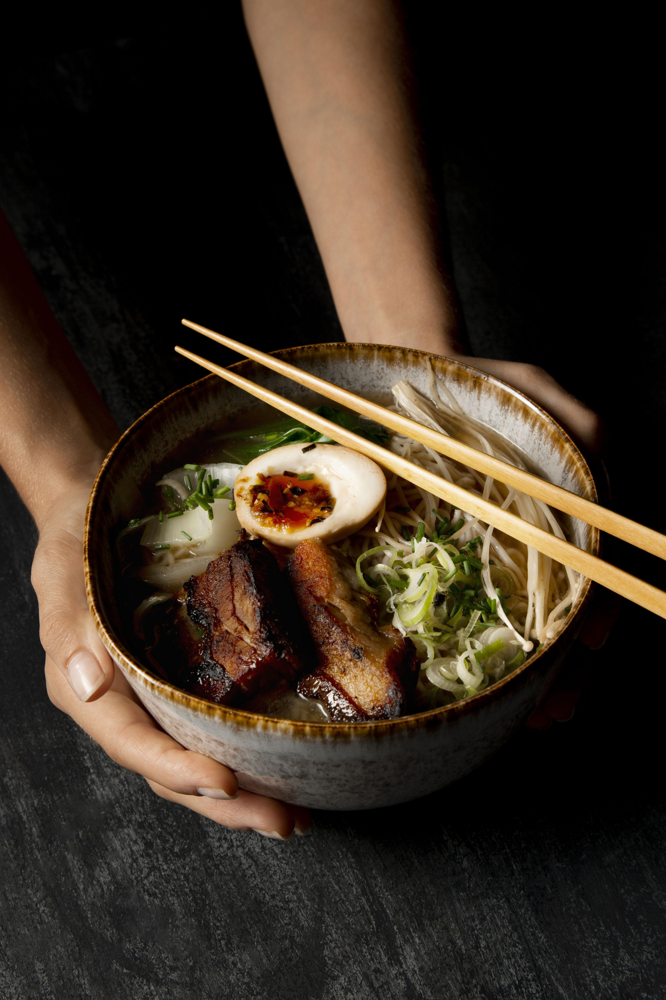

Home
RAMEN NOODLES


DESCRIPTION
Fresh vegetables? Quick and easy homemade broth? A soft-boiled egg and a pile of our favorite curly-cue packaged ramen noodles that remind us of college? That’s this homemade ramen.
If today is your day for an authentic Japanese cooking adventure, I highly recommend Nami’s amazing blog Just One Cookbook.
On the flip side, this recipe leans more in the direction of I-have-a-package-of-ramen-and-some-vegetables-can-we-make-lunch practical. Sort of healthy and fast and a little nostalgic (packaged ramen!) but also fresh-ly delicious with a ton of flavor.

INGREDIENTS YOU'LL NEED FOR THIS RECIPE
It’s a short one! It wouldn’t be easy homemade ramen without it.
- 1 tablespoon sesame oil
- 3 teaspoons grated ginger
- 4 teaspoons grated garlic
- 4 cups broth (I used chicken, but vegetable would also work)
- 4 cups water
- 1 ounce dried shiitake mushrooms
- 2 packages instant ramen (noodles only!)
- 1/2 cup chopped scallions or chives
- 2 cup chopped kale (or spinach)
- 1 cups shredded carrots (or another vegetable like bok choy)
- Srirachato taste
- crunchy golden panko crumbs for topping (see notes below)
HOW TO MAKE DELICIOUS HOMEMADE RAMEN
- Stir-Fry The Aromatics: Garlic and ginger, what a delicious duo. This is where the flavor is, friends.
- Make Your (Easy!) Broth: Add some chicken broth and dried shiitake mushrooms for some umami punch.
- Add Noodles: Cook your noodles right in the broth with some scallions (more flavor, please!).
- Add Veg: Thinly sliced kale, shredded carrots, whatever you’d like! Cook until just tender.
- Top It Off: Add some crunchy panko crumbs, a soft-boiled egg, chili oil, hot sauce, sesame oil, and/or soy sauce, whatever your heart desires.
Simmering some garlic, ginger, and dried mushrooms with your chicken broth makes for a great quickie “stock” for your soup base.
A good while in the pot will get some nice flavors going that will soon be soaked up by those noodles.
And by good while, I mean 19 minutes, because the whole thing takes 20.
The soft egg on top will get you all the Instagram likes, and the panko and extra chili oil or Sriracha will light your mouth up with joy.
At the end of the day, a deep bowl of bright veggies + flavorful broth + golden panko crumbs + soft-boiled egg + chewy,
tangled noodles is not going to let you down. ♡

WHAT TO ADD TO RAMEN
The beauty of this recipe is that it’s a (very very) blank canvas. You can add whatever you would like to make it your own and zazz things up!
If you want some direction, here are some options to think about:
- Soft-boiled egg
- Crunchy panko (see details in the FAQ below)
- Scallions or chives
- Sesame seeds
- Toasted sesame oil
- Corn
- Bok choy
- Chili oil
- Nori (dried seaweed)
- Gochujang and kimchi
- Sriracha
- Shredded chicken or thinly sliced beef or pork
Home